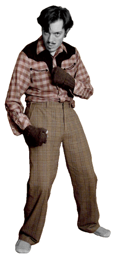
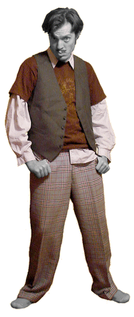

2009 October: Plaidtastic Mastication
Variant 01.

I am quite aware of plaid’s disrepute (outside of traditional Scottish wear), from garish golfers and faux westerners; what middle-aged men in mid-life crises pair with stripes & polka dots to the dismay of their doting wives. Or is this only in the comic strips? Whatever. I’ve generally ignored the bad reputation of plaid. Sometimes to the Nth degree. Shirts, coats, trousers, waistcoats & ties; once one’s wearing plaid all over, one nears the level of clown. If approached consciously, I don’t see why that should be a problem, especially if you’re conscious about color. I like to imagine it’s worked for me in the past. Occasionally I don’t even realize how much plaid I’m wearing.
The outfit featured is a relatively conservative plaid combination. The tag on the shirt declares the maker to be “Miller Miller Miller – western wear”. The right sleeve is ripped a trifle & repaired with safety pins. Definitely a thrift store find. If I’m to be perfectly honest, I rarely tuck in my shirts, this one especially, but I wanted to give the trousers a fair show. I s’pose the other thing missing is a belt. Never without a belt, am I. Ah well, there’s always next time to get it right.
The pants were thrift store bought as well, & are unfortunately not as authentically retro as they look. Tagged “Urban Pipeline”, & cost me around four dollars. One of the features I particularly like about these trousers is a little pocket partly down the right leg, about the size for a pocket-watch, though I really have no idea what it’s intended use is.
Lastly, we come to my dark gray woolen fingerless gloves. Not too much to say here, mostly that I knitted them myself & they really aren’t very difficult to make. The only minor grievances I have against these are that one is slightly more loosely knit than the other, & I ran out of gray yarn before finishing the last thumb, so that thumb is dark blue. Character-building inconsistencies. I also use these when I’m working with my Wacom tablet, because I’ve found the sweat from my hand dirties the surface. Same goes for light tables.
One theory of why I’m posing like an amateur pugilist is that the gloves remind me of the tape boxers wrap around their hands whilst practicing. Also that it’s rather goofy, & potentially more interesting than a straight shot. Definitely more fun.
2009 October: The Plaidistic Mystic
Variant 02.

Now these pantaloons are authentic retro plaid bell-bottoms, perchance a size or two too large for my minor girth. I’ve had ’em forever & a day. Unlike the previous post, this is a screamingly good example of how I actually like to clothe myself day-to-day. I love layering in such-a-way as this. Besides the potential jacket, one great addition could arrive in the form of a tie, best with the top two vest buttons done up. Peering at the outfit now, I’m inclined to think I’d go with a lighter tie, something to help with the plum-pink shirt. Perhaps a nice light gray pinstripe, lighter by degrees than the waistcoat…
Of specific note are the baggy sleeves, creating a reverse Popeye effect. There is something slightly medieval or Renaissance about having poofy sleeves. I’ve never seen the point of having cufflinks, or indeed of having buttons at all – I never use them. [ed: I was young and dumb. Cufflinks are awesome.]